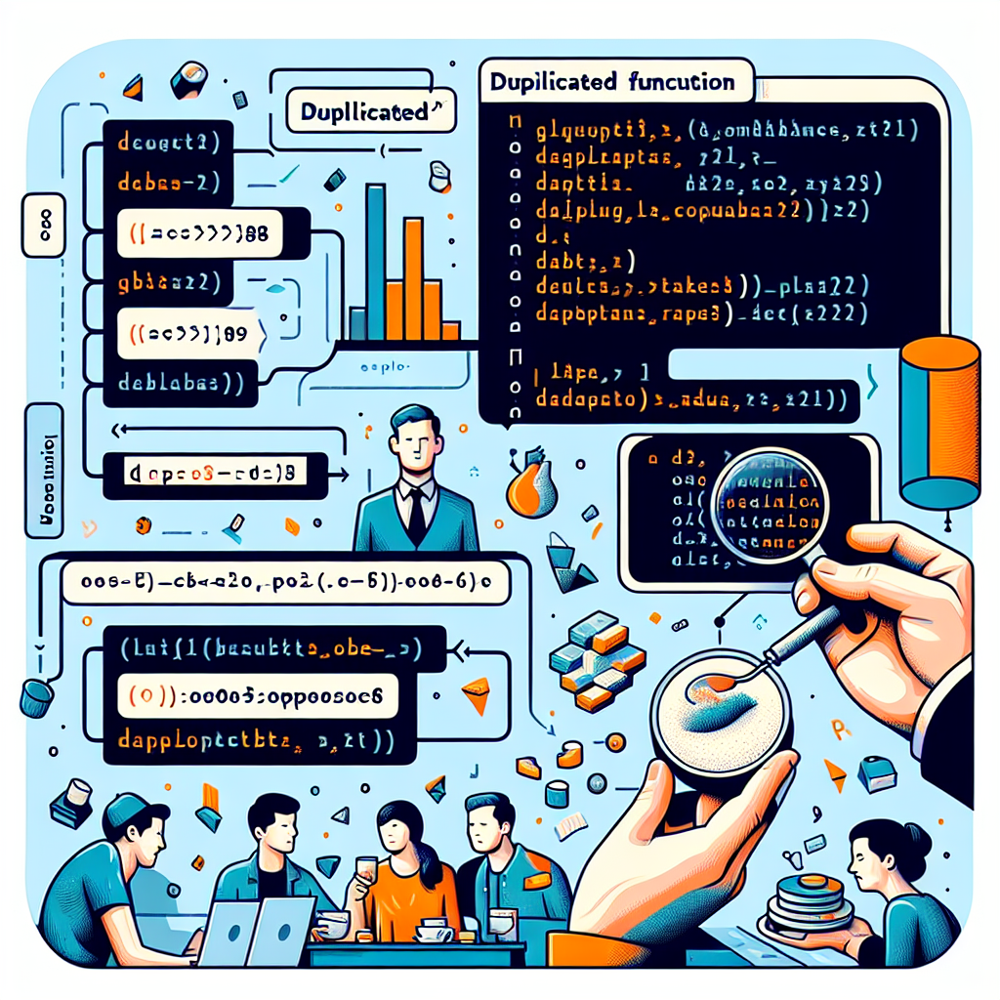

[1] FALSE FALSE FALSE FALSE TRUEIntroduction
In data analysis, one of the common tasks is identifying and handling duplicate entries in datasets. Duplicates can arise from various stages of data collection and processing, and failing to address them can lead to skewed results and inaccurate interpretations. R, a popular programming language for statistical computing and graphics, provides built-in functions to efficiently detect and manage duplicates.
The duplicated function in base R is a powerful tool that helps identify duplicate elements or rows within vectors and data frames. This blog post will provide a comprehensive guide on how to use the duplicated function effectively, complete with practical examples to illustrate its utility.
Understanding the duplicated Function
The duplicated function checks for duplicate elements and returns a logical vector indicating which elements are duplicates.
What Does duplicated Do?
- Identification: It identifies elements or rows that are duplicates of previous occurrences.
- Output: Returns a logical vector of the same length as the input, with
TRUEfor duplicates andFALSEfor unique entries.
Syntax and Parameters
The basic syntax of the duplicated function is:
duplicated(x, incomparables = FALSE, fromLast = FALSE, ...)x: A vector, data frame, or array.incomparables: A vector of values that cannot be compared. Defaults toFALSE.fromLast: Logical indicating if duplication should be considered from the last. Defaults toFALSE....: Further arguments passed to or from other methods.
Working with Vectors
The duplicated function can be applied to different types of vectors: numeric, character, logical, and factors.
Identifying Duplicates in Numeric Vectors
# Example numeric vector
num_vec <- c(10, 20, 30, 20, 40, 10, 50)
# Identify duplicates
duplicated(num_vec)Output:
[1] FALSE FALSE FALSE TRUE FALSE TRUE FALSEExplanation:
- The function returns
TRUEfor the second occurrence of duplicates. - In
num_vec, the numbers20and10are duplicated.
Handling Character Vectors
# Example character vector
char_vec <- c("apple", "banana", "cherry", "apple", "date", "banana")
# Identify duplicates
duplicated(char_vec)Output:
[1] FALSE FALSE FALSE TRUE FALSE TRUEExplanation:
- “apple” and “banana” both appear twice in the vector.
- The function marks the second occurrences as duplicates.
Dealing with Logical and Factor Vectors
# Logical vector
log_vec <- c(TRUE, FALSE, TRUE, FALSE, TRUE)
# Identify duplicates
duplicated(log_vec)Output:
[1] FALSE FALSE TRUE TRUE TRUEFactor vector
# Factor vector
fact_vec <- factor(c("low", "medium", "high", "medium", "low"))
# Identify duplicates
duplicated(fact_vec)Output:
[1] FALSE FALSE FALSE TRUE TRUEExplanation:
- The
duplicatedfunction works similarly with logical and factor vectors, identifying repeated values.
Applying duplicated on Data Frames
Data frames often contain multiple columns, and duplicates can exist across entire rows or specific columns.
Detecting Duplicate Rows
Output:
[1] FALSE FALSE FALSE FALSE TRUEExplanation:
- The fifth row is a duplicate of the second row in all columns.
Using duplicated on Entire Data Frames
You can use the function to find duplicates in the entire data frame:
# View duplicate rows
df[duplicated(df), ]Output:
ID Name Age
5 2 Bob 30Checking for Duplicates in Specific Columns
If you need to check for duplicates based on specific columns:
# Identify duplicates based on 'Name' column
duplicated(df$Name)[1] FALSE FALSE FALSE FALSE TRUE# Or for multiple columns
duplicated(df[, c("Name", "Age")])[1] FALSE FALSE FALSE FALSE TRUEExplanation:
- By providing a subset of the data frame, you focus the
duplicatedfunction on certain columns.
Removing Duplicate Entries
After identifying duplicates, the next step is often to remove them.
Using duplicated to Filter Out Duplicates
# Remove duplicate rows
df_no_duplicates <- df[!duplicated(df), ]
# View the result
df_no_duplicatesOutput:
ID Name Age
1 1 Alice 25
2 2 Bob 30
3 3 Charlie 35
4 4 David 40Difference Between duplicated and unique
duplicated: Returns a logical vector indicating duplicates.unique: Returns a vector or data frame with duplicate entries removed.
Example with unique:
unique(df)Output:
ID Name Age
1 1 Alice 25
2 2 Bob 30
3 3 Charlie 35
4 4 David 40When to Use Each:
- Use
duplicatedwhen you need to identify or index duplicates. - Use
uniquefor a quick way to remove duplicates.
Advanced Usage
The duplicated function offers additional arguments for more control.
The fromLast Argument
By setting fromLast = TRUE, the function considers duplicates from the reverse side.
Example:
# Using fromLast
duplicated(num_vec, fromLast = TRUE)Output:
[1] TRUE TRUE FALSE FALSE FALSE FALSE FALSEExplanation:
- Now, the first occurrences are marked as duplicates.
Managing Missing Values (NA)
The duplicated function treats NA values as equal.
# Vector with NAs
na_vec <- c(1, 2, NA, 2, NA, 3)
# Identify duplicates
duplicated(na_vec)Output:
[1] FALSE FALSE FALSE TRUE TRUE FALSETips for Accurate Results:
- If
NAvalues should not be considered duplicates, use theincomparablesargument.
# Exclude NAs from comparison
duplicated(na_vec, incomparables = NA)Output:
[1] FALSE FALSE FALSE TRUE FALSE FALSEReal-World Examples
Cleaning Survey Data
Suppose you have survey data with potential duplicate responses.
# Sample survey data
survey_data <- data.frame(
RespondentID = c(1, 2, 3, 2, 4),
Response = c("Yes", "No", "Yes", "No", "Yes")
)
# Identify duplicates based on 'RespondentID'
duplicates <- duplicated(survey_data$RespondentID)
# Remove duplicates
clean_data <- survey_data[!duplicates, ]
print(clean_data) RespondentID Response
1 1 Yes
2 2 No
3 3 Yes
5 4 YesExplanation:
- Duplicate
RespondentIDentries are identified and removed to ensure each respondent is counted once.
Preprocessing Datasets for Analysis
When preparing data for modeling, it’s crucial to eliminate duplicates.
# Load dataset
data("mtcars")
# Introduce duplicates for demonstration
mtcars_dup <- rbind(mtcars, mtcars[1:5, ])
# Remove duplicate rows
mtcars_clean <- mtcars_dup[!duplicated(mtcars_dup), ]
print(mtcars_clean) mpg cyl disp hp drat wt qsec vs am gear carb
Mazda RX4 21.0 6 160.0 110 3.90 2.620 16.46 0 1 4 4
Mazda RX4 Wag 21.0 6 160.0 110 3.90 2.875 17.02 0 1 4 4
Datsun 710 22.8 4 108.0 93 3.85 2.320 18.61 1 1 4 1
Hornet 4 Drive 21.4 6 258.0 110 3.08 3.215 19.44 1 0 3 1
Hornet Sportabout 18.7 8 360.0 175 3.15 3.440 17.02 0 0 3 2
Valiant 18.1 6 225.0 105 2.76 3.460 20.22 1 0 3 1
Duster 360 14.3 8 360.0 245 3.21 3.570 15.84 0 0 3 4
Merc 240D 24.4 4 146.7 62 3.69 3.190 20.00 1 0 4 2
Merc 230 22.8 4 140.8 95 3.92 3.150 22.90 1 0 4 2
Merc 280 19.2 6 167.6 123 3.92 3.440 18.30 1 0 4 4
Merc 280C 17.8 6 167.6 123 3.92 3.440 18.90 1 0 4 4
Merc 450SE 16.4 8 275.8 180 3.07 4.070 17.40 0 0 3 3
Merc 450SL 17.3 8 275.8 180 3.07 3.730 17.60 0 0 3 3
Merc 450SLC 15.2 8 275.8 180 3.07 3.780 18.00 0 0 3 3
Cadillac Fleetwood 10.4 8 472.0 205 2.93 5.250 17.98 0 0 3 4
Lincoln Continental 10.4 8 460.0 215 3.00 5.424 17.82 0 0 3 4
Chrysler Imperial 14.7 8 440.0 230 3.23 5.345 17.42 0 0 3 4
Fiat 128 32.4 4 78.7 66 4.08 2.200 19.47 1 1 4 1
Honda Civic 30.4 4 75.7 52 4.93 1.615 18.52 1 1 4 2
Toyota Corolla 33.9 4 71.1 65 4.22 1.835 19.90 1 1 4 1
Toyota Corona 21.5 4 120.1 97 3.70 2.465 20.01 1 0 3 1
Dodge Challenger 15.5 8 318.0 150 2.76 3.520 16.87 0 0 3 2
AMC Javelin 15.2 8 304.0 150 3.15 3.435 17.30 0 0 3 2
Camaro Z28 13.3 8 350.0 245 3.73 3.840 15.41 0 0 3 4
Pontiac Firebird 19.2 8 400.0 175 3.08 3.845 17.05 0 0 3 2
Fiat X1-9 27.3 4 79.0 66 4.08 1.935 18.90 1 1 4 1
Porsche 914-2 26.0 4 120.3 91 4.43 2.140 16.70 0 1 5 2
Lotus Europa 30.4 4 95.1 113 3.77 1.513 16.90 1 1 5 2
Ford Pantera L 15.8 8 351.0 264 4.22 3.170 14.50 0 1 5 4
Ferrari Dino 19.7 6 145.0 175 3.62 2.770 15.50 0 1 5 6
Maserati Bora 15.0 8 301.0 335 3.54 3.570 14.60 0 1 5 8
Volvo 142E 21.4 4 121.0 109 4.11 2.780 18.60 1 1 4 2Explanation:
- Ensures the dataset used for analysis contains unique observations.
Combining Datasets and Resolving Duplicates
Merging datasets can introduce duplicates that need to be resolved.
# Sample datasets
df1 <- data.frame(ID = 1:3, Value = c(10, 20, 30))
df2 <- data.frame(ID = 2:4, Value = c(20, 40, 50))
# Merge datasets
merged_df <- rbind(df1, df2)
# Remove duplicates based on 'ID'
merged_df_unique <- merged_df[!duplicated(merged_df$ID), ]
print(merged_df_unique) ID Value
1 1 10
2 2 20
3 3 30
6 4 50Explanation:
- After combining, duplicates based on
IDare removed to maintain data integrity.
Best Practices
Tips for Efficient Duplicate Detection
- Specify Columns: When working with data frames, specify columns to focus on relevant data.
- Use
fromLast: Consider thefromLastargument to control which duplicates are marked. - Handle
NAValues: Be mindful of howNAvalues are treated in your data.
Common Pitfalls to Avoid
- Assuming
uniqueandduplicatedAre the Same: They serve different purposes. - Ignoring Data Types: Ensure that data types are appropriate for comparison.
Performance Considerations with Large Datasets
- For large datasets, operations can be time-consuming.
- Consider data.table or dplyr packages for optimized functions like
duplicated.
Conclusion
Identifying and handling duplicates is a fundamental step in data preprocessing. The duplicated function in base R provides a straightforward and efficient method to detect duplicate entries in your data. By understanding how to apply this function to vectors and data frames, and knowing how to leverage its arguments, you can ensure the integrity of your datasets and improve the accuracy of your analyses.
Incorporate the duplicated function into your data cleaning workflows to streamline the preprocessing phase, paving the way for more reliable and insightful analytical outcomes.
Additional Resources
- R Documentation on
duplicated - Data Cleaning with R
- Related Functions:
Happy Coding! 😃
